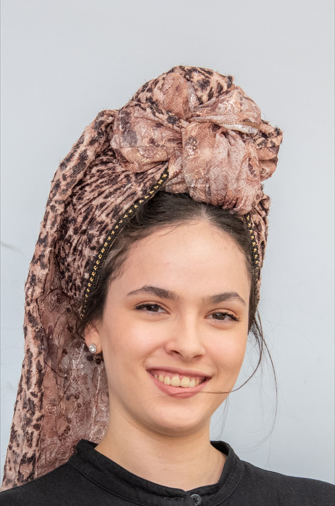

Roni Sara Buchbut

Summary
Versatile and dedicated professional with a passion for problem-solving, adept at navigating diverse challenges with creativity and precision. Recognized for academic excellence as a Dean's list member, demonstrating a strong foundation in software development and bioinformatics.
Experience
Lev Academic Center-Educational Instructor (Volunteering) 2021-2023
- Guiding students in OOP, Python, SQL, and C++ offering helpful feedback on assignments.
Zvia Jerusalem-High School Instructor (Via national service) 2020-2021
- The position included teaching students, helping with graduation ceremony preparations, and creating personal connections with students.
Projects
MRI Image Classification for Cancer Detection 2024
- Developing Python code in Google Colab to classify MRI images for several types of cancer.
- Training a neural network model using the Keras framework to identify the type of cancer (from 3 options) or detect if there is no cancer.
- Enhancing CNN within the model to improve accuracy in cancer detection
Education
Lev Academic Center- 2021-2024
B.Sc - Bachelor of Science, Bioinformatics
- Developed various programs in Python using Visual Studio.
- Completed courses: Bio-statistics, Cell Biology, Structural bioinformatics, Data Structure, Intro to Computer Science, and Algorithms and Complexity Analysis, and more.
- Overall GPA: 95, Dean’s list member.
- ● Proficient in R, Python, and C++; eager to learn new technologies and practices.
Contact Me